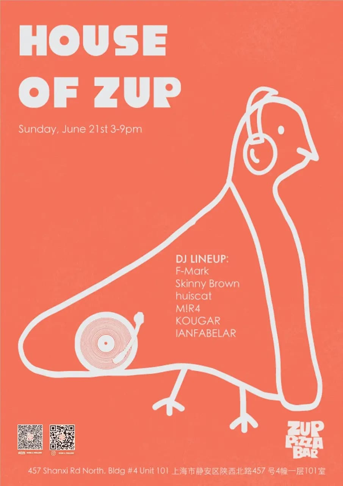

upcoming / Medium
HOUSE OF ZUP
RA lists HOUSE OF ZUP as a Sunday afternoon ZUP Pizza Bar session with house and Italo disco at the center, plus the venue's recurring pizza-bar social context. This is a daytime neighborhood route, not a late-room techno pick.

DateJun 21
Time15:00-21:00
VenueZUP Pizza Bar
DistrictJing'an
Soundhouse, italo disco
PriceCheck RA / venue
Age / IDCheck venue
Source layertrusted-ra-and-smartshanghai
Intensitysoft
Credibilitysolid
Event Tags
Simple tags for sound, room context, ticket/source status, and details that still need a source check.
How We Recommend This
- RecommendationIncluded because the House / Italo Disco running order gives this ZUP Sunday a clear daytime social-dance lane: useful for house, disco, food-and-drinks, and low-pressure neighborhood plans rather than basement pressure.
- Best forBest for a Sunday afternoon house and Italo disco hang with food, drinks, and an easy room feel.
- Verify before goingRecheck RA, SmartShanghai, or ZUP before going for entry policy, age rule, and whether the no-cover Sunday format still applies.
- Source confidenceRA confirms the current title, date, time, venue/address, lineup, event-level genres, admin, last-updated state, and flyer. SmartShanghai remains secondary local context. Cost and age are still not visible on RA, so keep those as verify-before-going.
Lineup and Notes
- F-MarkF-Mark: house/ italo disco selection. RA lists F-Mark from 15:00 to 16:00.
- Skinny BrownSkinny Brown: house/ italo disco selection. RA lists Skinny Brown from 16:00 to 17:00.
- huiscathuiscat: house/ italo disco selection. RA lists huiscat from 17:00 to 18:00.
- M!R4M!R4: house/ italo disco selection. RA lists M!R4 from 18:00 to 19:00.
- KOUGARKOUGAR: house/ italo disco selection. RA lists KOUGAR from 19:00 to 20:00.
- IANFABELARIANFABELAR: house/ italo disco selection. RA lists IANFABELAR from 20:00 to 21:00.
Source Trail
- Resident Advisor - HOUSE OF ZUP Jun 21 trusted-ra / checked 2026-06-19 RA event detail confirms title, Sun Jun 21 2026 date, 15:00-21:00 timing, ZUP Pizza Bar address, F-Mark / Skinny Brown / huiscat / M!R4 / KOUGAR / IANFABELAR running order, House and Italo Disco genres, event admin waynehou12, last-updated state, and flyer front/back visibility.
- SmartShanghai - House of Zup Jun 21 secondary / checked 2026-06-19 Secondary local listing context for the same Jun 21 ZUP Sunday session; use RA as the event-level source for genre and running order.
Trust Ledger
- Last checked2026-06-19
- Selection basisIncluded for source visibility, room fit, and these editorial signals: techno-adjacent, date route, ticket path.
- Commercial relationshipNo paid placement recorded.
- Correction routeSend source fixes through RED 980793145 or the corrections policy.
- PolicyHow We Recommend / Corrections